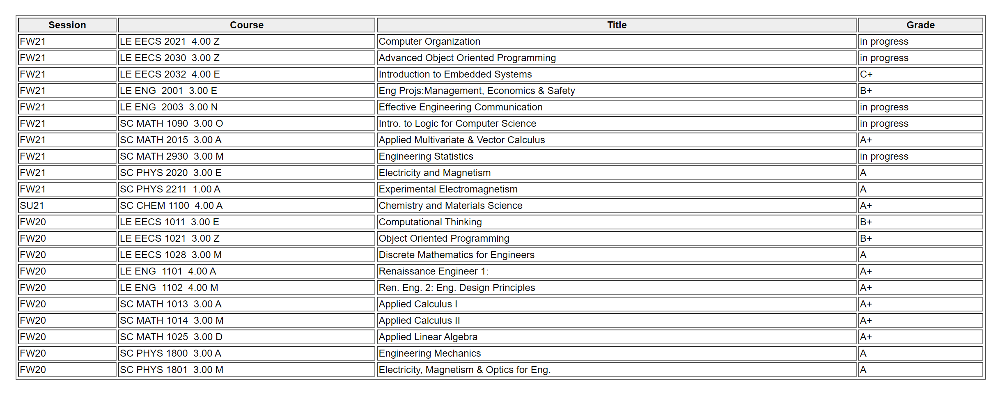
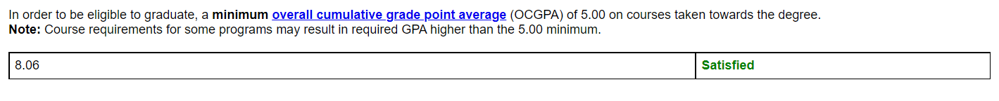

Mustafa YildirimComputer Engineering Second Year
About Me
I have significant programming experience in Java, C, Mathlab, and HTML. Over the course of my study at York University, I gathered strong programming skills by writing codes and creating websites. As reflected in my GPA, I am a hard-working student who can perform well under pressure and time. I can skillfully contribute in a team setting and manage the team to solve challenging problems as I worked in two different teams on more than a dozen assignments and projects. Furthermore, during these team works, I became a natural team leader by preparing all necessary documentation, planning, and distributing the roles of my team members at thestart of each project.
Projects
Website
Discord Bot
Grades


Contact Info
Email: yildrim@my.yorku.ca
Phone: +1 (416) 222 2222